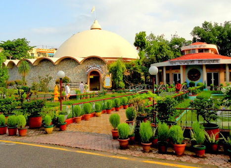
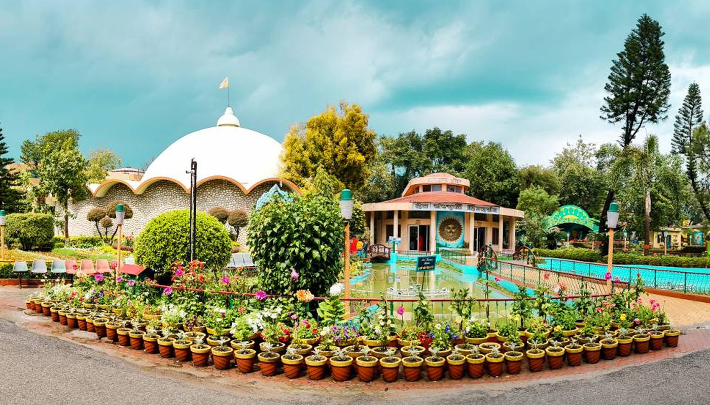
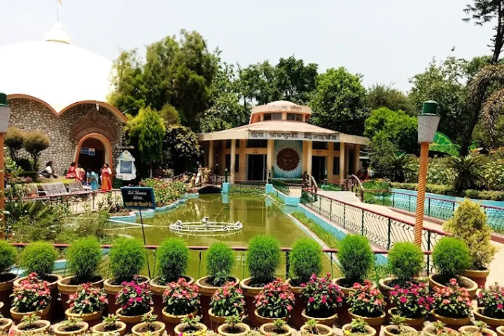
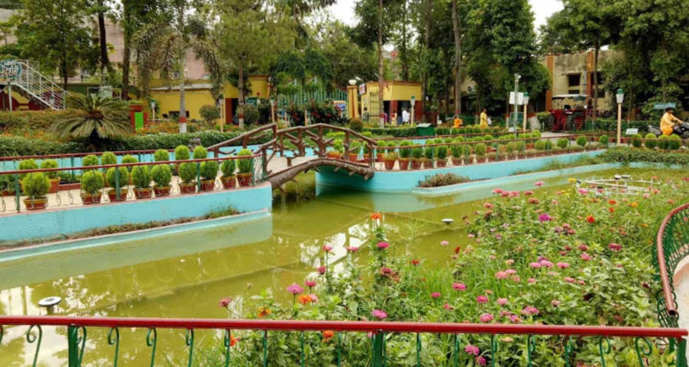
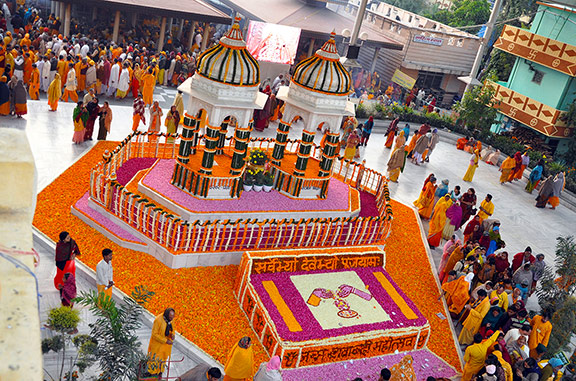

Shantikunj Ashram is the global headquarters and spiritual epicenter of the All World Gayatri Pariwar (AWGP), founded by Pandit Shriram Sharma Acharya in 1979 on the banks of the holy Ganges in Haridwar, Uttarakhand. Spanning over 180 acres, this vast ashram complex serves as a modern Gurukul dedicated to the revival of ancient Vedic wisdom, Gayatri Mantra sadhana, Yajna (fire rituals), and the integration of spirituality with scientific thought. It is a living embodiment of the founder's vision: "Yug Nirman Yojana" — the mission to usher in a new era of moral, cultural, and spiritual regeneration through disciplined sadhana, selfless service, and enlightened living. Thousands of sadhaks and visitors come here daily for Gayatri Yajna, meditation, yoga, spiritual discourses, and the powerful collective energy generated during the massive Yagyashalas.
Shantikunj is not just an ashram — it is a transformative sanctuary where ancient Indian spirituality meets contemporary relevance. The daily routine includes early morning Gayatri Mantra jap, group meditation, Akhand Deep Yajna (continuous fire ritual), and evening satsang. The campus features beautiful gardens, museums on Vedic science and Indian culture, a research center for spiritual science, hostels, and the iconic Gayatri Temple with its towering shikharas. During major festivals like Gayatri Jayanti, Navratri, and Guru Purnima, the ashram becomes a sea of light, chants, and devotion, radiating an atmosphere of inner peace, moral upliftment, and collective consciousness. For seekers of self-realization, social reform, and divine connection, Shantikunj offers a rare space where personal transformation fuels the awakening of humanity.
October to March for pleasant weather and comfortable stay/exploration; peak spiritual energy during Navratri (March–April & September–October), Gayatri Jayanti (June), Guru Purnima (July), and major yajnas. Ashram open daily ~5 AM–9 PM; early morning (4–6 AM) for Gayatri jap and Yajna offers profound silence and energy. Summer can be hot but vibrant; avoid heavy monsoon (July–September) for easier travel and outdoor activities. Plan overnight stay for full immersion in ashram routine.
Daily group Gayatri Yajna in massive Yagyashalas, meditation & yoga sessions, darshan at Gayatri Temple, Akhand Jyoti Museum & Vedic Science exhibits, spiritual discourses & satsang, beautiful gardens & Ganges views, library on spiritual literature, and participation in collective sadhana — perfect for mantra jap, inner peace, learning Vedic principles, photography of serene campus, and experiencing the transformative power of disciplined spiritual living.
Book accommodation in advance (ashram provides simple, clean rooms at nominal rates), arrive early for morning sadhana, follow ashram rules (simple vegetarian food, no outside food inside, modest clothing, silence during meditation), participate in yajna with focus and devotion, carry notebook for discourses, respect the disciplined atmosphere (no loud talking/smoking), combine with nearby Har Ki Pauri Ganga Aarti or Mansa/Chandi Devi temples for a fuller Haridwar spiritual journey, and embrace the free seva spirit — donations are voluntary.
"In the quiet dawn of Shantikunj, where Gayatri's light merges with the rising sun and thousands of voices rise as one flame, the ashram does not merely teach spirituality — it breathes it. Here, every breath becomes a prayer, every step a surrender, and every heart awakens to the truth that the new era begins not in distant futures, but in the silent revolution of a single awakened soul."